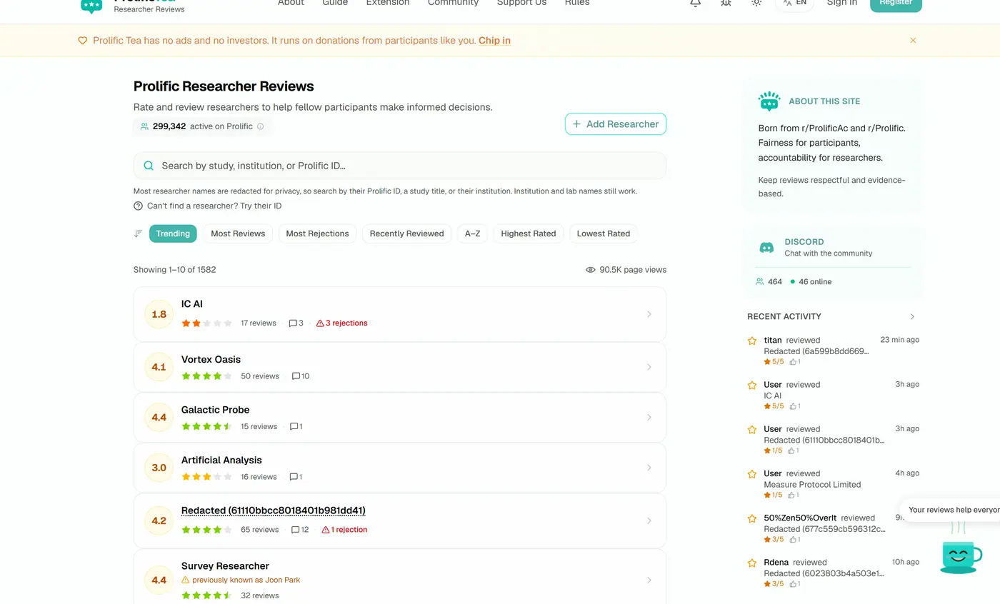

Prolific Tea
A review platform where participants on Prolific rate the researchers who pay them, on fairness and on rejection behaviour. It is the Turkopticon that Prolific never had. Every researcher gets a profile with an aggregate rating, a rejection count and threaded reviews, so a participant can check who they are working for before they start.
Next.js throughout, plus a Chrome extension that identifies researchers by intercepting the network traffic of the study list, PWA push notifications, image uploads, threaded comments and the moderation tooling needed to keep a review site honest. It is indexed by Google and grows on its own.
No company behind it, no investors, no ads, free permanently, funded by the people who use it.
- Page views
- 90,500
- Researchers indexed
- 1,582
- Languages
- 5
